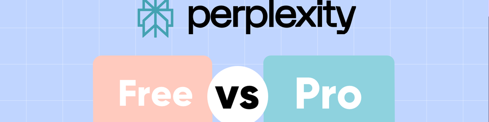

Perplexity AI 免费版与专业版：Perplexity Pro 值得吗？
免费版和专业版的主要区别在于功能深度和使用限制。为了方便你比较，我列出了主要区别。下表列出了每个计划的定价和功能。
| 特征 | 自由的 | 专业版（20 美元/月） |
|---|---|---|
| 简洁搜索 | 无限 | 无限 |
| 专业查询 | 每天3次 | 无限 |
| 深入研究查询 | 每天3次 | 每天500 |
| Perplexity Labs 查询 | ❌ | 每月50 |
| 从文件中获取答案 | ❌ | ✅ |
| 私人空间 | 每个空间 5 个文件 | 每个空间 50 个文件 |
| 通过文件应用程序搜索 | ❌ | ✅（Google Drive、Dropbox） |
我还通过 GoSplit 找到了一种安全且价格实惠的订阅方式。这个订阅共享平台提供的 Perplexity Pro拼车发车服务，Perplexity官网专业版 20 美元，但是在这里你可以花7.33 美元和其他人拼车使用，但功能和服务质量却完全相同。
核心功能：免费版与专业版对比

1. Perplexity深度研究

免费： 每天 3 个积分专业版： 每天 500 积分
深度研究 (Deep Research) 于今年 2 月上线，旨在进行深度检索和分析。Perplexity Pro 用户每天最多可运行 500 次，而免费版仅限 3 次。只需提出一个问题，它就能运行数十次搜索，筛选数百个来源，并在 2-4 分钟 内提供一份结构化报告。这大大缩短了研究时间。
它就像一位研究助理。它会反复提出问题、阅读文档、推理后续步骤，并不断优化路径。在审查资料来源后，深度研究会编写一份清晰完整的报告。你可以将其导出为 PDF 格式，或创建一个"Perplexity页面"进行分享。
它在金融、市场营销和技术研究领域都非常有用，也能处理健康和旅行等日常话题。在"人类的最后考试"测试中，它的表现优于"双子思维"和"DeepSeek-R1"等模型，展现出强大的信息整合能力。
2. Perplexity Labs

免费： 无法进入实验室优点： 完全访问自动化项目生成
Perplexity Labs是 Perplexity Pro 的另一项核心功能，于 2025 年 5 月推出，仅供 Pro 用户使用。它是一个 自动化的项目构建器 ：你只需输入请求，它便会在5-10 分钟内完成搜索、整理结果并提供可用的输出。与专注于报告的深度研究不同，实验室更注重执行和交付。
具体来说，实验室可以：
生成文档和报告 ：创建结构化输出，例如市场研究、产品分析或学术摘要（可导出为 PDF 或 Word）。构建表格和图表 ：获取和清理公共数据、运行计算并生成具有可视化效果的 Excel/CSV 文件。可视化和应用程序 ：设计交互式仪表板或生成轻量级 Web 工具、单页网站和演示幻灯片。文件和部署 ：所有输出（图表、图像、CSV 或代码）都存储在"资源"选项卡中以供下载，而"应用程序"选项卡可让你一键部署和共享交互式 Web 应用程序。
所有这些功能都包含在
3. Perplexity空间
免费： 每个空间 5 个文件专业版： 每个空间 50 个文件
Perplexity Spaces 提供免费版和专业版。免费版每个空间最多支持 5 个文件，而专业版则将限制提高到
使用 Pro，你可以在一个地方管理更多 PDF、电子表格和图像、提出问题、生成摘要或图表，并连接
Spaces 支持多用户共享，方便团队协作。你可以邀请同事或朋友加入，共享文件并共同处理任务。细致的权限设置可确保你的数据私密安全。
在准备提案时，我和我的团队将所有材料放在一个空间里，实时讨论，并当场生成图表——这比通过电子邮件发送文件要快得多。
4. 多模型切换

免费： 仅限基本型号专业版： 从 GPT-5、Claude 4 Sonnet、Gemini 2.5 Pro 和 Sonar 中选择
Perplexity Pro 包含多模型切换功能，这是免费版计划所不具备的功能，可让你为每个任务选择最佳的 AI 模型。支持的模型包括 GPT-5、Claude 4 Sonnet、Gemini 2.5 Pro 以及 Perplexity 自己的Sonar。
Claude 4 Sonnet ：最适合复杂推理和代码生成Gemini 2.5 Pro ：数学和逻辑能力强，在多个基准测试中得分超过 90%Sonar ：针对信息检索进行了优化，解码速度比 Gemini 2.0 Flash 快十倍，非常适合快速查询GPT-5 ：写作、对话和内容创作的最通用选项
这种灵活性让你能够选择合适的工具来完成工作，避免某些场景下单一模型的限制。在进行数据分析时，我使用 Gemini 进行计算；在撰写提案时，切换到 GPT-5 感觉更自然、更高效。
5. 无限专业搜索

免费： 每天 3 个优点： 无限制搜索，更快，引用结果
免费用户每日搜索次数受限，而专业版用户则可享受无限次搜索，并可即时整合多个来源。对于频繁搜索的研究人员来说，这消除了一个主要瓶颈。
在进行市场调研时，我经常需要比较不同公司的数据。普通搜索引擎需要点击多个网站，非常耗时，而 Pro Searches 可以一次性整合多个来源，节省了我一半以上的时间。
除了这五大主要功能外，
谁应该升级到 Perplexity Pro？
Perplexity Pro 的售价为每月 20 美元。它扩展了搜索、学术研究、编程和数据分析以及团队协作方面的体验，使其更适合频繁和深入的使用。
学术研究与写作

对于学生和研究人员来说，Pro 可以显著减少浏览数十个网站的时间。Pro 提供无限搜索功能，可处理日常问题，而 500 个深度研究积分则可自动从论文、数据库和权威网站收集信息。
WolframAlpha 集成功能可通过分步讲解处理复杂的计算，这对 STEM 学生来说非常宝贵。免费用户则无法获得海量数据和强大的计算能力。对于任何正在寻找最佳人工智能教育工具的人来说，Perplexity Pro 都是不错的选择。
编程和数据分析

专业用户可以粘贴有缺陷的代码，以便逐行调试、重构建议以及优化 Python、JavaScript、Java、C++ 等的输出。
使用 Labs，上传 CSV/Excel/JSON 文件即可进行自动数据清理、统计建模和可视化。分析师原本需要数小时才能完成的工作，现在只需 10-20 分钟即可完成。免费用户无法享受同等功能。
团队协作

Spaces 提供统一的资源管理功能，而免费用户则完全无法做到这一点。它可以存储文件、邀请同事、设置权限并实时协作。比电子邮件文件共享效率更高。
总的来说，Perplexity Pro 不仅仅是一个"更强大的搜索引擎"，更是一个功能强大的工具，适用于
更低的价格获得 Perplexity Pro
Perplexity Pro 确实是一个强大的研究工具，但每月 20 美元的价格对于许多用户来说并不便宜，尤其是因为它主要侧重于搜索和研究。
如果你想以更低的价格获得相同的功能，可以通过
在这里，Perplexity Pro 的订阅费用仅为官方价格的二分之一不到，付款后即可立即激活。功能完全相同，体验也同样稳定便捷。

此外，如果你需要的不仅仅是 Perplexity Pro，他们还提供GoSplit ，这是一款集成产品，包含
最终结论：Perplexity Pro 值得吗？
对于轻度用户来说，Perplexity 的免费版本足以满足日常查找或解决小问题，无需升级。
但是，一旦你的需求发展到撰写论文、进行研究、运行数据分析或编码，Pro 在速度、模型切换和文件处理方面的优势就会变得明显，值得付费。
至于订阅，你可以通过GoSplit以较低的成本获得相同的 Pro 功能，在节省金钱的同时保持完整的体验。
如果你的目标不仅限于搜索和研究，还包括写作、图像生成和视频创作，那么像GoSplit这样的一体化选项将为你的预算带来更大的价值。
简而言之，如果你的使用频率不高，免费版就足够了。但对于学习、研究和专业工作来说，Perplexity Pro 是一项明智的投资。
常问问题
为Perplexity人工智能付费值得吗？
是的，它提供无限次专业搜索、深度研究功能和结构化报告，节省时间并提高工作效率。GoSplit 提供价格实惠的专业访问共享帐户。
Perplexity AI Pro 有什么优势？
Perplexity Pro 提供无限次搜索、每日深度研究以及自动多轮信息收集功能。其准确性和来源可靠性均优于免费版本。
Perplexity pro 比 ChatGPT 更好吗？
Perplexity Pro 在研究和信息检索方面表现出色，提供深度研究和 Sonar 模型等高级功能。ChatGPT 功能多样，而 Perplexity Pro 则专注于数据驱动型任务和学术工作，因此对于研究密集型项目而言，Perplexity Pro 是更佳选择。